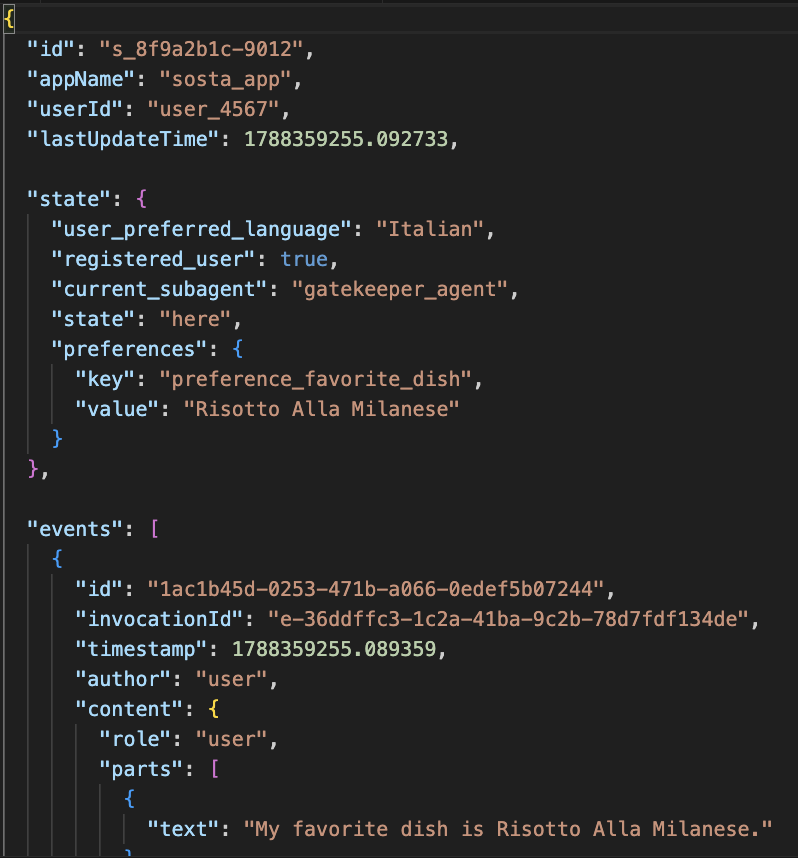

Each session is a single, continuous conversational lifecycle and execution boundary between a user and your agent. It is composed of:
Identification (id, appName, userId)a unique identifier for this specific conversation thread, agent application and a particular user.
Activity tracking (lastUpdateTime)a timestamp of the last time an event occurred in this conversation thread.
History (events)a chronological sequence of all interactions (Event objects: user messages, agent responses, tool actions) in this thread. All interactions in the web UI are here.
Session State (state)a place to store temporary data relevant only to this ongoing conversation, acting as a scratchpad for the agent during the interaction.
